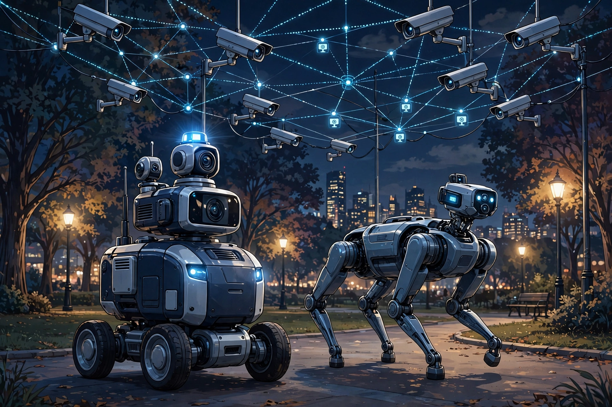

2026년 10월 23일

슈프리마가 AI 영상분석과 자율주행 로봇을 결합한 순찰로봇 솔루션 '큐페이스 가디언(Q-Face Guardian)'을 공개했습니다. 21일부터 24일까지 인천 송도컨벤시아에서 열리는 '2026 국제치안산업대전(KPEX)'에서 처음으로 선보인 제품입니다.
구성이 재미있습니다. 슈프리마의 AI 얼굴인식 기반 실종자 수색 솔루션 '큐페이스 파인더'에 자율주행 로봇 전문기업 뉴빌리티의 순찰로봇 '뉴비 실드'와 사족보행 로봇 '뉴트렉'을 결합한 통합 관제 솔루션인데요. 고정된 CCTV뿐 아니라 이동 중인 로봇의 카메라 영상을 AI로 실시간 분석해, 감시 사각지대를 보완한다는 아이디어입니다.
AI가 사람의 눈 대신 거리를 순찰하는 시대가 오고 있네요. 얼굴인식 기반 수색이 골든타임을 확보한다는 점에서는 분명 유용하지만, 사생활 보호와 균형을 어떻게 맞출지도 함께 생각해볼 문제인 것 같습니다. 안전망 기술도 이제 AI 기기의 영역으로 들어오는 중입니다.
출처: 전자신문 — 슈프리마, 'AI 영상분석+자율주행' 순찰로봇 선보인다 · 보안뉴스 — 슈프리마, AI 영상보안 기반 순찰로봇 '큐페이스 가디언' 공개 · 헤럴드경제 — 경찰 떴다! 알고 보니 로봇이었다…치안산업대전 개막